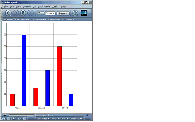

Unlike the variants for other types of image component, chart variants are generated at runtime rather than being permanently stored on a file system. MCS gets the information required to draw the chart variant from chart data, a chart display attributes, and device data.

Chart components are perhaps most effective when you need to display data that changes frequently, and that can be generated dynamically from a source like a database or a web service. However, it is also possible to use static chart values.
Chart data are the values and labels that are to be represented in the chart. MCS derives this data, which is common to all devices, by evaluating either JSP expressions or static values in the data and labels attributes of the XDIME chart element.
A basic static example takes space and comma separated data and label values direct from the attributes.
<canvas layoutName="/chart.mlyt">
<chart= pane="onePane"
alt="Encouraging Q1 Figures"
name="ExampleChart"
data="10 15 50, 60 30 10"
labels="Jan Feb Mar"/>
...
</canvas>
The next example shows a call to a Java Bean, with the same chart element. In this case JSP expressions take the place of the literal values in the attributes.
The chart data and label values are generated by the Java Bean. The data is still defined statically, but a similar technique could be used to access a dynamic source.
package volantis.mcs.example.utilities; import
com.volantis.mcs.utilities.ChartData; import
com.volantis.mcs.utilities.ChartValues; public class
ExampleChartData implements ChartData { private static
String mark = "(c) SomeSite Systems Ltd 2001. All Rights
Reserved.";I ChartValues data = new ChartValues("10 15 50,
60 30 10"); ChartValues labels = new ChartValues("Jan Feb
Mar"); public ChartValues getData() { return data; }
public ChartValues getLabels() { return labels; }
}
When MCS is running on a Unix application server it needs to connect to a host X-windows server to render a chart. There are a number of alternative methods depending on the server platform. For example, you need to add the application server user to the the X server access control list
xhost + [local_ip]and specify an export display context
export DISPLAY=[local_ip]:0.0
Related topics
Working with XDIME
Chart attributes
Styling charts